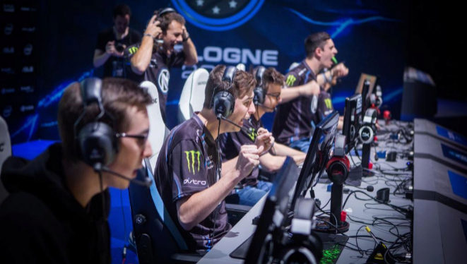
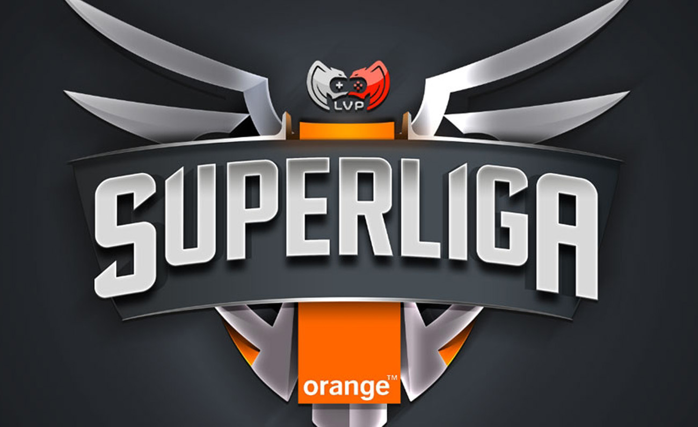

eSports
Los eSports, e-sports o deportes electrónicos son un concepto que se utiliza para nombrar las competencias de videojuegos organizadas a nivel profesional. Aunque la industria de los eSports no es nueva (existe desde la década de 1990), solo recientemente ha empezado a ganar adeptos. Su funcionamiento es muy sencillo: cada juego de esport tiene sus propias reglas y tienen acceso a diferentes dispositivos y plataformas de forma online u offline.
A partir de la década de 1990, los videojuegos pasaron de ser un pasatiempo ocasional a convertirse en un deporte profesional organizado. Actualmente, los deportes electrónicos son una industria que, según un informe de Grand View Research, alcanzará los mil millones de dólares en 2024, con una tasa de crecimiento anual compuesta del +15.7% entre 2020 y 2027. Aunque en un primer momento pudiese parecer que no tendría éxito el formato —una audiencia que no disfrutaría tanto viendo jugar como jugando ellos mismos— ya se ha podido comprobar cómo estas competiciones de videojuegos en las que los espectadores observan cómo juegan otros gamers, enganchan.

Aunque hay decenas de videojuegos que están causando furor, los deportes electrónicos más famosos y que destacan por encima del resto son: League of Legends, Counter-Strike 2, Clash Royale, FIFA y Call of Duty. El público de los eSports ha crecido enormemente en los últimos años. Se estima que hay casi 200 millones de entusiastas a nivel mundial y 2,9 millones en España.
No hay una cifra exacta de cuántas competiciones de eSports se realizan al año a causa del gran número de torneos amateur. Eso sí, en España hay actualmente cuatro ligas profesionales, que son la Superliga Orange de League of Legends, Unity League de CS2, Crown League de Clash Royale y R6 Spain Nationals de Rainbow Six Siege.
